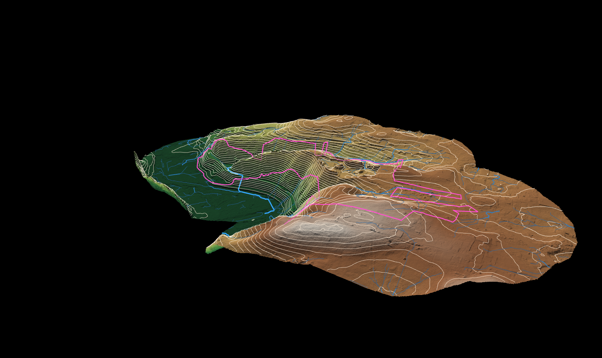
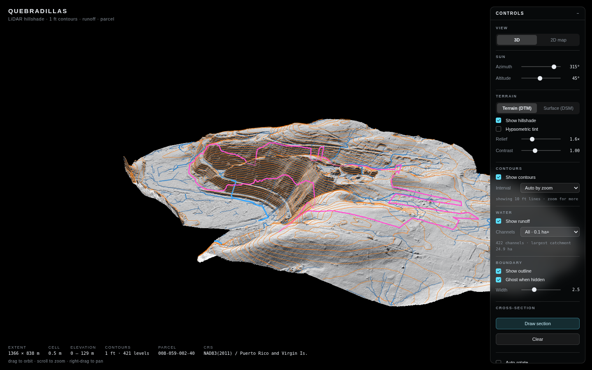
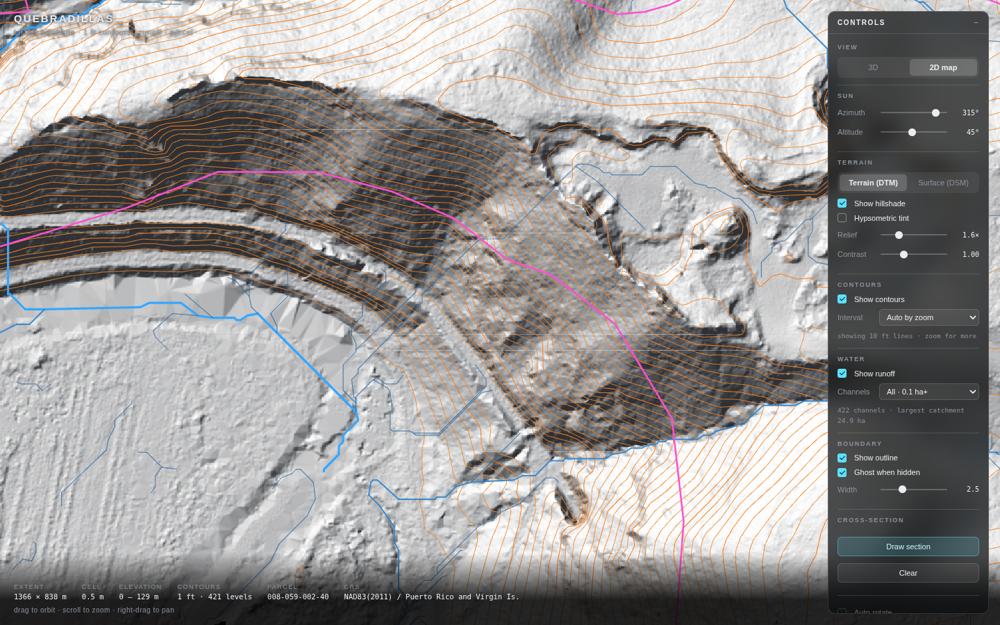
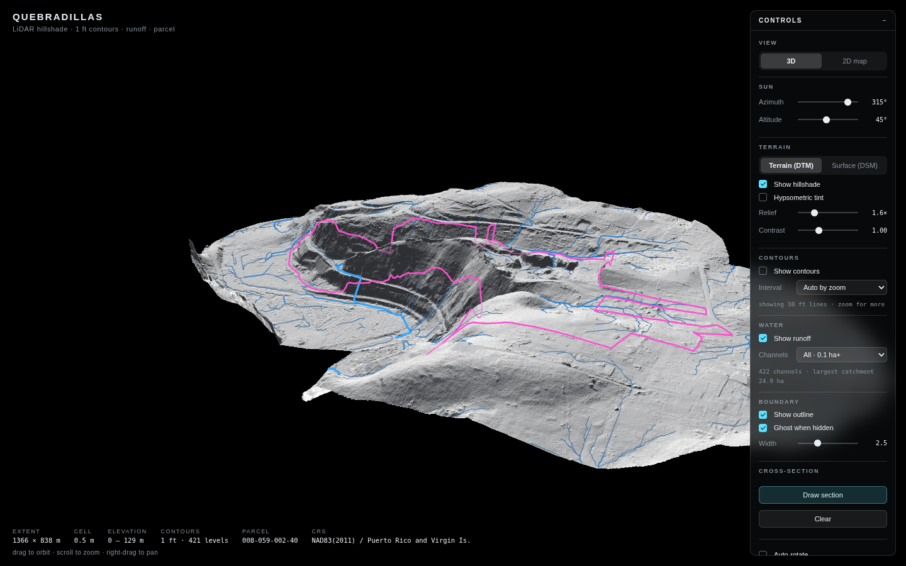
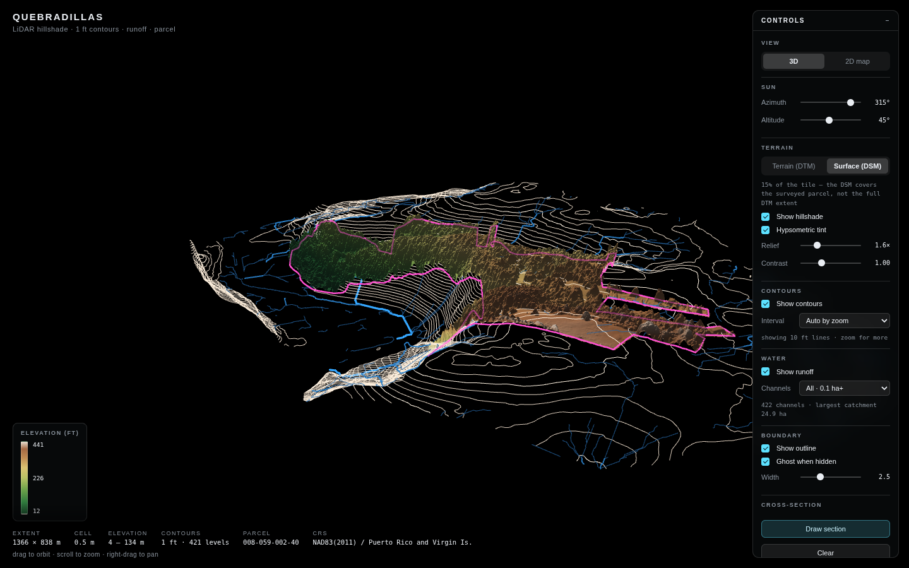
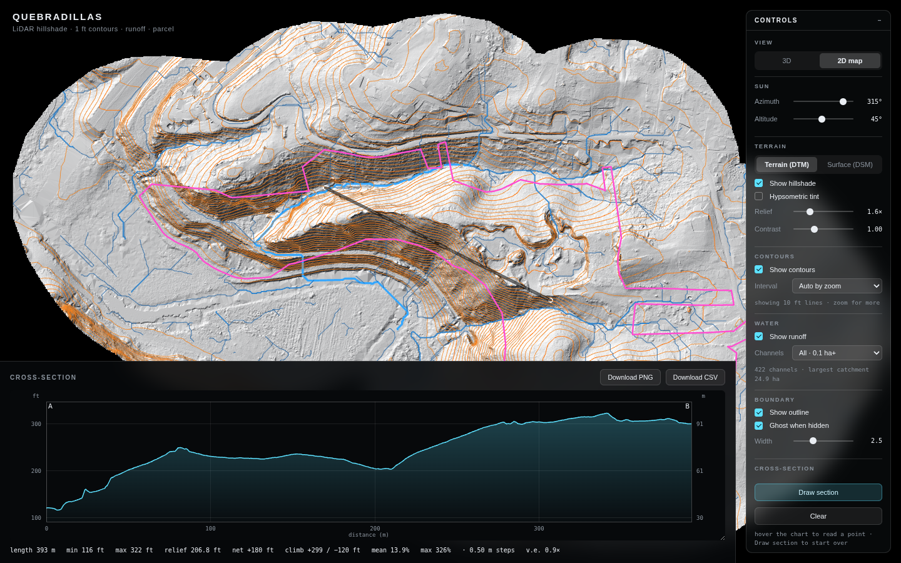
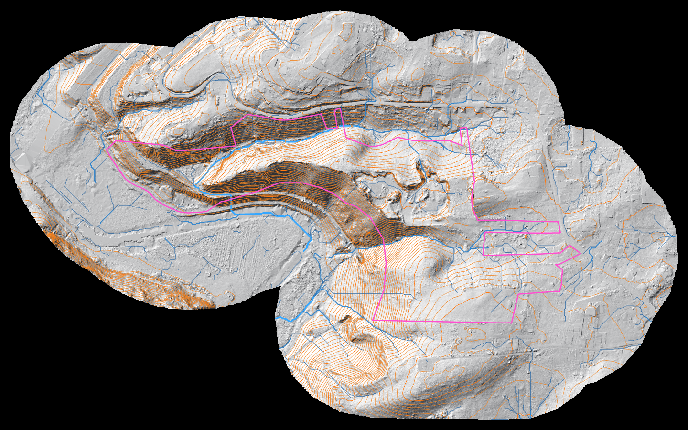

LiDAR-powered 3D property intelligence
See the land the way it actually sits — before anyone sets foot on it.
LandPlanner turns raw LiDAR into an interactive 3D model of any parcel: real terrain relief, precision contours, drainage patterns, and — where surface data exists — the canopy and structures sitting on top of it. Explore it in a browser, in 3D or as a flat plan, and pull an exact elevation profile anywhere you draw a line.
No installs. No plugins. Runs in the browser you already have open.

The product
Every layer a site decision actually needs.
Not a static render — a working model. Every feature below is live, adjustable, and built on the real elevation data for the parcel, not a stylised approximation.
Terrain & relief
Photoreal hillshade, true to the survey
The model is shaded per-pixel from the actual LiDAR grid — not a texture draped over a simplified mesh. Adjust the sun's azimuth and altitude to see how a slope reads at different times of day, dial in vertical exaggeration to make subtle grading obvious, and switch on a hypsometric elevation tint to read the whole property's relief at a glance.
- Real-time sun position and shading, not a baked image
- Vertical exaggeration for subtle grade changes
- Elevation-tinted color ramp with a live legend

Contours
1-foot contours, generated from the raw grid
Contour lines are cut directly from the elevation data at a true 1-foot interval — hundreds of levels where a project needs them, automatically thinned to major/index/fine tiers so the map stays legible whether you're looking at the whole property or a single pad.
- Full 1 ft interval available on demand, any zoom level
- Auto-thinned tiers keep the map readable while zoomed out
- Toggle the terrain off entirely to work from contours alone

Drainage
Where the water actually goes
A hydrology model traces flow direction and accumulation across the whole surface, then renders the resulting drainage network directly on the terrain — weighted so the main channels stand out from minor ones. Useful the moment stormwater, erosion, or a septic field's placement is part of the conversation.
- Full drainage network, filterable by contributing area
- Channel weight scales with catchment size
- Overlays cleanly on terrain, contours, or a bare plan

Surface model
See the canopy and structures, not just the ground
Where a surface scan exists alongside the bare-earth survey, switch between the two with one click. The bare-earth terrain is what your contours and drainage are built from; the surface model shows what's actually sitting on top of it — tree cover, rooflines, anything the laser's first return hit. Comparing the two tells you canopy height and building footprints without a second site visit.
- One-click switch between bare earth and surface model
- Reference lines (contours, drainage, boundary) stay put for direct comparison
- Reveals canopy height and structure footprints instantly

Cross-sections
Draw a line, get a profile — and export it
Drag a line anywhere on the model and a terrain cross-section renders live underneath it — length, min/max elevation, relief, grade, all read directly off the LiDAR grid. Zoom into any stretch of it to resolve small terraces a full-property view can't show, then download the chart as an image or the raw samples as CSV with real-world coordinates.
- Live profile while you draw — no separate export/reprocess step
- Zoom into a span to resolve fine grade changes
- One-click PNG and CSV export, coordinates included

2D plan view
The same model, flattened to a plan
Switch out of 3D into an orthographic, north-up plan view of the exact same data — the presentation format a permit reviewer, a listing sheet, or a survey exhibit actually expects, without losing any of the shading, contours or drainage detail underneath it.
- True orthographic plan, not a perspective screenshot
- All layers stay active — nothing is 3D-only
- Pan and zoom exactly like a familiar map view

Who it's for
Built for anyone who has to make a decision about a piece of land.
Landowners
See exactly what you own — slope, drainage, buildable area — before you clear, subdivide, build, or sell.
Request a demo →Government & municipalities
Assess drainage, erosion and flood exposure for permitting and planning without a field visit for every parcel.
Request a demo →Realtors
Show buyers the real topography of a lot before they ever visit — a stronger listing than a flat plat map.
Request a demo →Surveyors
Hand clients an interactive model alongside your survey, and pull exportable cross-sections in minutes, not a follow-up visit.
Request a demo →Engineers
Check grading, drainage direction and site cross-sections against real elevation data before it's a stamped design.
Request a demo →Architects
Understand canopy, structures and true grade on a site before the first massing study, straight from LiDAR.
Request a demo →How it works
From raw LiDAR to a model you can share — three steps.
Send us the data
A LiDAR-derived DEM (or DSM) and, if you have one, a parcel boundary. Already have LiDAR flown? We work with what you have. Don't have it yet? We can help you source it.
We build your model
Terrain, contours, drainage and — where available — the surface model are generated and tuned for the property, then deployed as a self-contained, no-install interactive page.
Explore, analyze, share
Send the link to a client, a reviewer, or a buyer. Draw cross-sections, export data, toggle layers — no software to install, no account required to view it.
Bring your own parcel. We'll build the model.
Fifteen minutes is usually enough to tell you whether we're a fit — and you can try the live demo yourself before that call.
Get in touch
Tell us about the property.
Share what you're working with and what you need it for — we'll follow up with next steps, including what data we'd need from you if you don't have LiDAR yet.
FAQ
Common questions
What data do you need from us?
Ideally a LiDAR-derived bare-earth DEM (and a surface model / DSM if you have one), plus a parcel boundary if you want it draped on the model. If you don't have LiDAR yet, tell us the property and we'll advise on sourcing it.
How long does it take to get a model built?
It depends on data availability and property size, but turnaround from receiving usable LiDAR to a deployed, shareable model is typically fast — we'll give you a firm estimate after the intro call.
Do I need to install anything to view it?
No. The model runs entirely in a web browser — desktop or mobile — with no plugins, accounts, or downloads required to view or share it.
Can I get the underlying data out, not just the visualization?
Yes. The cross-section tool exports both a chart image and a CSV of the raw elevation samples with real-world coordinates, and the source data formats we use are standard GIS-compatible files.
Is my property data kept private?
Yes — models are built and delivered per engagement and are not published or shared beyond what you ask for.